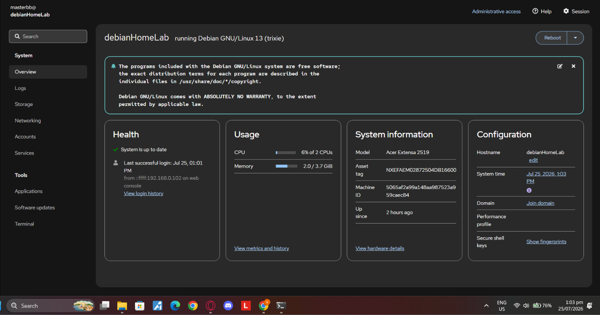

Homelab: Self-Hosted Server
Repurposed an old laptop into a headless Debian server managed over SSH. UFW blocks inbound traffic by default; Tailscale provides secure remote access without exposing ports. Runs a full Docker/Portainer stack including Pi-hole for DNS-level ad blocking, Cockpit for real-time monitoring, and a Jellyfin media server automated with Sonarr and Radarr.